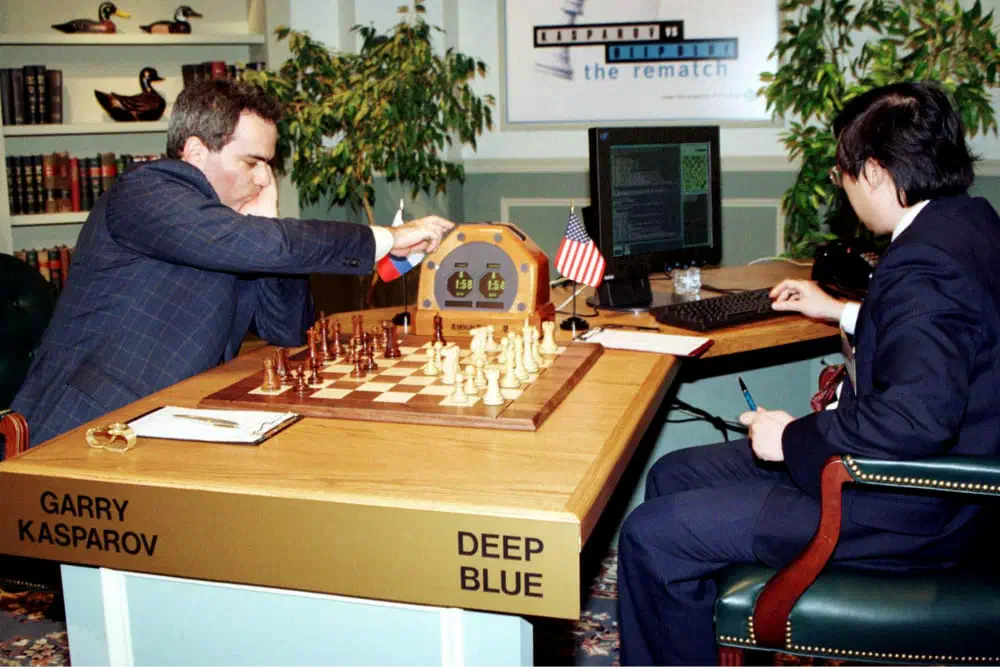
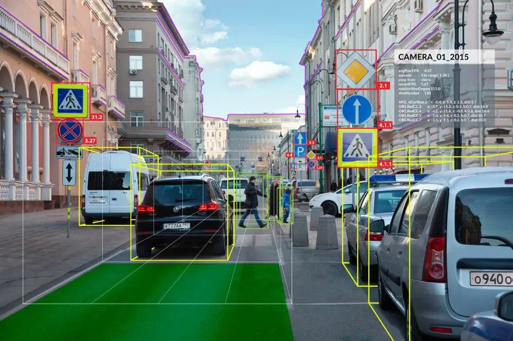

Искусственный интеллект
Развивается искусственного интеллекта
Искусственный интеллект (ИИ) — это не инструмент или программа, а отдельное направление компьютерных наук. Специалисты по ИИ разрабатывают системы, которые анализируют информацию и решают задачи аналогично тому, как это делает человек. ИИ использует алгоритмы, которые позволяют компьютеру обрабатывать большие объёмы данных и находить в них закономерности. На основе этих закономерностей он может делать выводы, предсказывать события или принимать решения. Представим, что наш мозг — это огромная команда сотрудников, которые вместе работают над разными проектами. Искусственный интеллект — это попытка создать такую же команду с помощью компьютеров и программ. Простой пример ИИ — это шахматный компьютер, который может анализировать ситуацию на доске и делать ходы, основанные на определённых правилах и тактиках. Он имитирует процесс мышления человека при игре в шахматы, но делает это с помощью алгоритмов и вычислений.
История возникновения ИИ
Математик Алан Тьюринг предложил идею мыслящей машины. Он считал, что машины, как и люди, могут использовать доступную информацию для принятия решений. Чтобы это проверить, он разработал тест. Человек с помощью текстового интерфейса задавал вопросы одновременно другому человеку и машине. Если отличить их ответы не получалось, считалось, что машина прошла тест и обладает искусственным интеллектом.
Математик Алан Тьюринг предложил идею мыслящей машины. Он считал, что машины, как и люди, могут использовать доступную информацию для принятия решений. Чтобы это проверить, он разработал тест. Человек с помощью текстового интерфейса задавал вопросы одновременно другому человеку и машине. Если отличить их ответы не получалось, считалось, что машина прошла тест и обладает искусственным интеллектом.
Проверить концепцию Тьюринга оказалось сложно из-за ограниченной функциональности компьютеров и дорогой техники. Такие исследования были доступны только крупным технологическим компаниям и престижным университетам.
В 1956 году в Дартмутском колледже прошла конференция о «механизации интеллекта», на которой Джон Маккарти, когнитивист и специалист по информатике, предложил термин «искусственный интеллект». Этот момент можно считать началом истории ИИ.
1960-е: Золотые годы искусственного интеллекта
- Начали разрабатывать первые экспертные системы — компьютерные программы, которые моделируют знания человека в определенной области. Например, в химии или физике. Эти системы обычно состояли из двух компонентов: базы знаний и механизма вывода. База знаний содержала информацию о предметной области, а механизм вывода работал как диалоговое окно. Например система DENDRAL помогала определять структуру молекул неизвестных органических соединений.
- Появились персептроны — первые нейронные сети, которые смогли обучаться на данных и решать простые задачи классификации. Например, распознавать рукописные цифры.
- Разработан язык программирования LISP, который стал основным языком для исследований в области ИИ.
- В середине 1960-х Джозеф Вайценбаум создал ELIZA — первого чат-бота, который имитировал работу психотерапевта и мог общаться с человеком на естественном языке.
-
1990–2000-е: машины стали обыгрывать людей

- В 1997 году Deep Blue от IBM (компьютерная система для игры в шахматы) победила гроссмейстера Гарри Каспарова ― действующего чемпиона мира по шахматам. Внедрено программное обеспечение для распознавания речи Dragon Systems в Windows.
- В конце 1990-х годов разработали Kismet — искусственного гуманоида, который мог распознавать и демонстрировать эмоции.
- В 2002 году искусственный интеллект появился в домах в виде Roomba — первого робота-пылесоса.
- В 2004 году два робота-геолога NASA — Opportunity и Spirit — исследовали поверхность Марса без помощи человека.
- В 2009 году Google начала разрабатывать технологию самоуправляемых автомобилей. Позже они прошли тест на самостоятельное вождение.
Благодаря увеличению вычислительной мощности стали возможными более сложные и мощные алгоритмы машинного обучения:
Сферы применения ИИ в современном мире
- Голосовые помощники. Siri от Apple, Google Assistant, Alexa от Amazon и Алиса от Яндекса работают на основе ИИ и отвечают на вопросы, делают напоминания, управляют устройствами.
- Рекомендательные системы. Сервисы потокового видео, такие как Netflix и YouTube, используют технологию искусственного интеллекта для анализа предпочтений пользователей и рекомендаций фильмов или видео. Они учатся на основе предыдущих просмотров и отметок «нравится».
- Распознавание образов. В смартфонах и некоторых фотоаппаратах есть функция автоматического распознавания лиц и объектов. ИИ позволяет определить, кто и что находится на фотографии. Умная камера есть и в приложении Яндекса. Например, можно навести её на предмет, и приложение найдет похожий товар в интернете.
-
Автопилоты и автономные транспортные системы. Искусственный интеллект применяется в авиации и автомобильной индустрии для разработки автопилотов и систем автономного вождения. Он позволяет транспортным средствам анализировать окружающую среду, принимать решения на основе полученной информации и безопасно перемещаться.
 - Финансовые аналитические системы. ИИ используется для анализа данных, прогнозирования трендов на рынке, определения рисков и принятия решений по инвестициям. Он помогает улучшить эффективность и точность финансовых операций.
- Языковые переводчики. Сервисы машинного перевода, такие как Google Translate, используют ИИ для автоматического перевода текстов с одного языка на другой. Они обучаются на большом количестве параллельных текстов и статистических моделях, чтобы предлагать качественные переводы.
-
Игровая индустрия. В компьютерных играх искусственный интеллект используется для создания виртуальных персонажей с интеллектом, способных адаптироваться к действиям игрока, принимать решения и симулировать реалистичное поведение.
.webp)
- Медицинская диагностика. ИИ используют, чтобы анализировать рентгеновские снимки или снимки МРТ. Это помогает врачам более точно диагностировать заболевания и принимать решения о лечении.
- Робототехника объединяет ИИ, машинное обучение и физические системы, чтобы создавать интеллектуальные машины, которые могут взаимодействовать с реальным миром. Яркий пример — роботы Boston Dynamics. Они используют ИИ для балансирования, навигации, преодоления препятствий и перетаскивания предметов.
Перспективы развития: что говорят аналитики
В 2022—2023 годах многих волнует генеративный ИИ. Бизнес хочет использовать его, чтобы сократить расходы, а специалисты боятся, что он отнимет у них работу. Консалтинговая компания McKinsey спрогнозировала влияние generative AI на производительность, автоматизацию и рабочую силу. Согласно новому отчету, генеративный ИИ может ежегодно приносить мировой экономике от 2,6 до 4,4 триллионов долларов (примерно 2–4% от совокупного мирового валового внутреннего продукта в этом году).
Авторы рассмотрели сценарии с 2040 по 2060 год и их влияние на производительность труда до 2040 года. Они также оценили потенциал технологии для автоматизации задач примерно в 850 профессиях. Основные выводы:
- Сектор IT может получить самое большое экономическое развитие. Генеративный ИИ, если его повсеместно внедрить, может увеличить его стоимость на 4,8—9,3%. Объём рынка банковского дела, образования, фармацевтики и телекоммуникаций тоже может вырасти на 2—5%.
- Продажи и маркетинг, разработка ПО, работа с клиентами и исследования и разработки продуктов — 75% от общей потенциальной экономической выгоды от ИИ.
- Опрос в восьми странах (развитые и развивающиеся экономики) показал, что генеративный ИИ, скорее всего, автоматизирует задачи на относительно
- Генеративный ИИ может автоматизировать 50% всех рабочих задач в период с 2030 по 2060 год. Технология, скорее всего, автоматизирует задачи, требующие логического рассуждения и генерации или понимания естественного языка.
Развитие слабого искусственного интеллекта
Это тип ИИ, который может эффективно решать специфические задачи, но не обладает общим интеллектом или самосознанием.
Развитие сильного искусственного интеллекта
В этом сценарии ИИ обладает полным самосознанием и интеллектуальными способностями, которые превосходят человеческие.
Тот самый Скайнет, который хочет нас уничтожить
В некоторых книгах и фильмах ИИ развивается с негативными последствиями для человечества.
источник: https://practicum.yandex.ru/blog/chto-takoe-iskusstvennyi-intellekt/